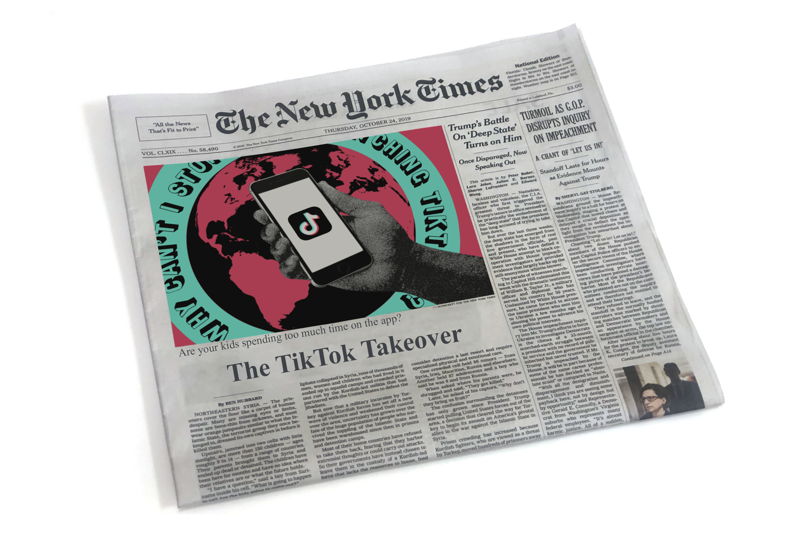

The "Tiktok Takeover" dynamic GIF, created in 2022 using Adobe Illustrator and Photoshop, serves as an engaging visual narrative ready to captivate readers across both digital and print media platforms. This vibrant creation embodies the essence of Tiktok, intertwining the platform's signature colors. The infusion of Tiktok's iconic hues, coupled with bold black text, establishes a striking contrast that mirrors the platform's logo, delivering an eye-catching and cohesive design. This GIF is a testament to the power of visual storytelling in the digital age, providing an exciting and interactive element that's perfectly suited for a newspaper article. It not only encapsulates the year 2022 but also the essence of Tiktok's influence in contemporary media culture.
